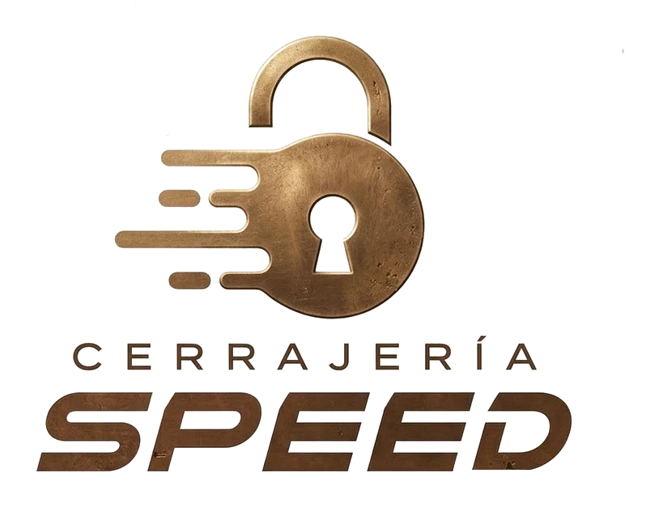
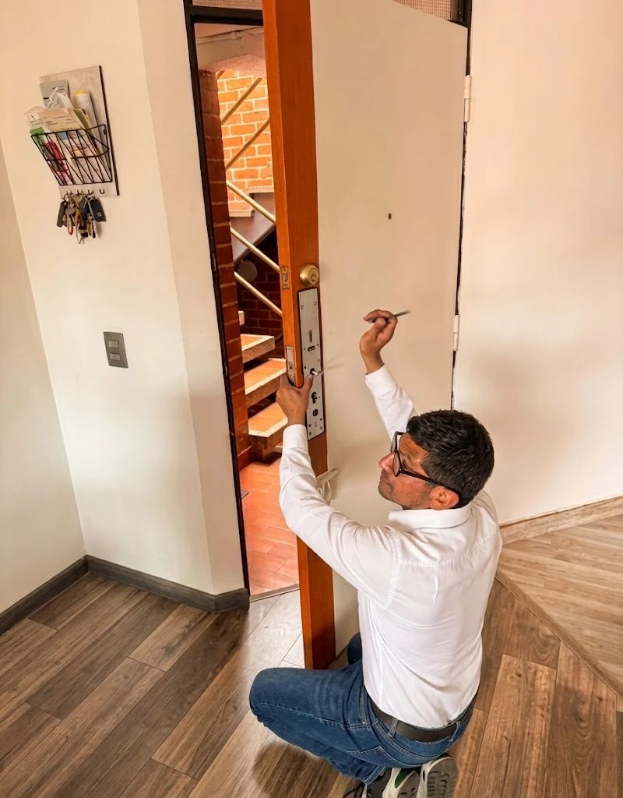

Apertura y cerraduras de seguridad
Abrimos sin dañar e instalamos cerraduras de alta seguridad y antibumping.


WhatsAppCerrajería en Bogotá
Abrimos puertas, instalamos cerraduras y hacemos que tu hogar sea más seguro.

Cerrajería Speed es el trabajo de Jhon, un experto en cerrajería con años de experiencia en el oficio. Abre puertas, cambia e instala cerraduras, y arregla lo que otros dejan a medias — rápido, con cuidado y con la seriedad de alguien que vive de hacerlo bien.
Atiende en toda Bogotá, con precios cómodos y la tranquilidad de saber que el trabajo va a quedar bien hecho.
Sin llave, con la cerradura dañada o quieres más seguridad — esto es lo que hacemos.
Abrimos sin dañar e instalamos cerraduras de alta seguridad y antibumping.

Huella, código o app — controla el acceso de tu casa o negocio desde el celular.

Reparamos o cambiamos cerraduras dañadas, rápido y con garantía.
Y muchas cosas más — cuéntanos qué necesitas y te decimos cómo te ayudamos.
Años de experiencia en el oficio.
Atendemos en toda la ciudad.
Tarifas justas, confirmadas antes de empezar.
Nos aseguramos de que todo quede bien.
"Me quedé sin llave a las 2am y en 25 minutos ya estaban en mi puerta. Sin dañar nada."
"Instalaron cerradura de alta seguridad en mi local. Trabajo impecable, garantía escrita."
"Se partió la llave dentro del carro. En 30 minutos resolvieron todo sin rayar nada."
Manejamos precios cómodos y justos. Te confirmamos el valor exacto por WhatsApp antes de la visita, sin sorpresas.
Atendemos en toda Bogotá.
Sí. Nos aseguramos de que todo quede bien hecho, y en equipos instalados aplica además la garantía del fabricante.
Sí, escríbenos cuando lo necesites por WhatsApp y coordinamos contigo.
Cerrajería de confianza. Precios cómodos y la tranquilidad de que todo va a quedar bien.
Escríbenos por WhatsApp